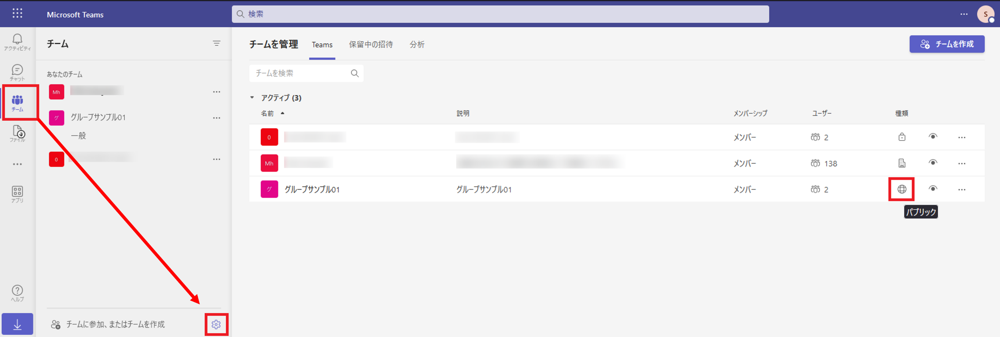
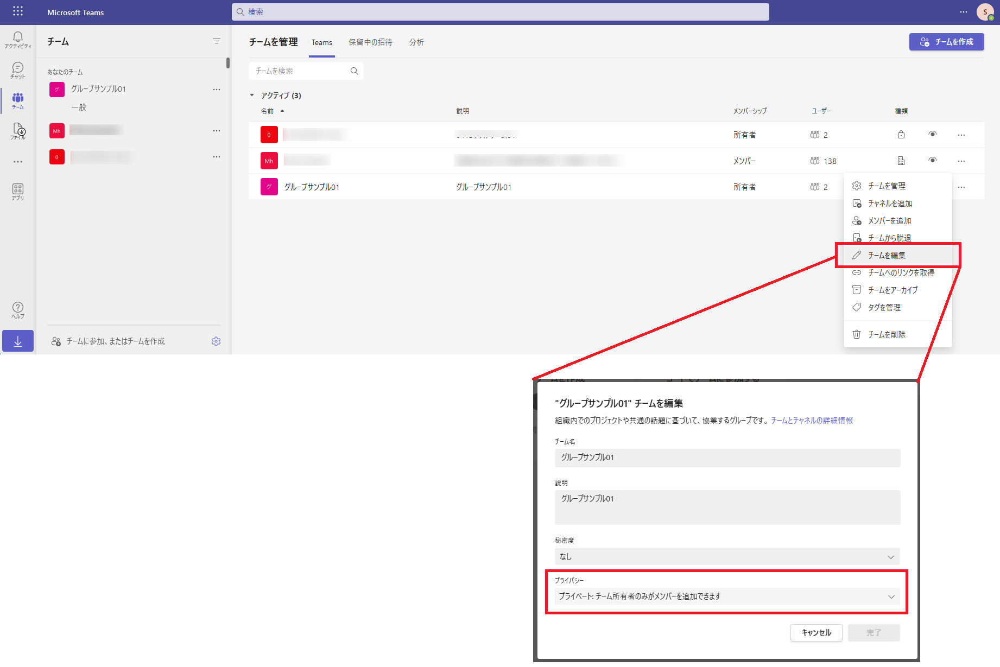
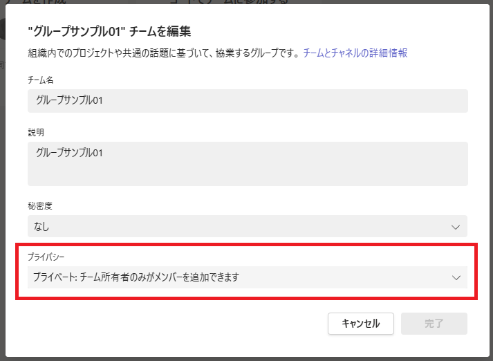

こんにちは。Unified Communications サポート チームです。
いつも Microsoft Teams をご利用いただきありがとうございます。
現在、Microsoft Graph API でvisibility 属性を “HiddenMembership” に設定した Microsoft 365 グループを利用してMicrosoft Teams のチームを作成した際、当該チームに関する Teams クライアント上でのプライバシー設定の表示に不整合が生じる状況となることを確認しております。
本事象は、特定のシナリオで Microsoft 365 グループ、および Microsoft Teams チームの作成を行う場合にのみ事象が発生するものとなりますが、もし同様の動作を確認された場合には、本記事でご紹介する内容をご参考としていただけますと幸いでございます。
以上の状況から、現時点ではvisibility 属性を “HiddenMembership” に設定した Microsoft 365 グループを利用して Microsoft Teams のチームを作成することは、本ブログ記事の記載の問題の影響を受けるため、予めご承知おきの上、実装や運用をご検討くださいますようお願いいたします。
1. 発生事象について
Microsoft Graph API を利用し、visibility 属性を “HiddenMembership” に設定した Microsoft 365 グループの作成を行い、その後、作成したグループを基にして Microsoft Teams のチームを作成した場合、Teams クライアント上の “チームを管理” と “チームを編集” の各画面において、当該チームのプライバシー設定の表示に差異が生じる状況となります。
具体的な事象再現シナリオとしては、以下のような手順となります。
〇 事象再現シナリオ
- Microsoft Graph API を利用し、”HiddenMembership” の Microsoft 365 グループを作成します。
1 | // リクエスト例 |
- Microsoft Graph API または Teams クライアントより、手順 1 にて作成した Microsoft 365 グループを利用し、Microsoft Teams のチームを作成します。
- Teams クライアント上から作成したチームを確認した際、”チームを管理” と “チームを編集” で、プライバシー設定の表示に以下のような差異が発生いたします。
- “チームを管理” (https://teams.microsoft.com/_#/manageteams/myteams/) のチーム一覧内の “種類” 列では、【パブリック】チーム (地球儀のアイコン) として表示されます
- 作成したチームの “チームを編集” 画面では、【プライベート】チーム (“プライベート : チーム所有者のみがメンバーを追加できます” のプルダウン) として表示されます



※ Microsoft 365 グループの作成に関する Graph API、および “HiddenMembership” 属性に関する詳細につきましては、以下の公開情報をご参照ください。
Title: group リソースの種類
URL: https://learn.microsoft.com/ja-jp/graph/api/resources/group?view=graph-rest-1.0)
本問題が生じる要因としましては、visibility 属性に設定した “hiddenmembership” の設定値が、現状の Microsoft Teams サービスの実装上考慮されていないことに起因しております。
“hiddenmembership” の設定値は、上記 Graph API に関する公開情報内にも記載がございます通り、Microsoft 365 グループの作成時において利用が可能な属性値でございますが、現在の Teams サービスにおきましては、当該の値が設定された M365 グループを利用した Teams チームの作成、および表示が考慮された実装とはなっていないことから、その結果として、Teams クライアント上での表示に不整合が生じる状況が発生します。
※ Teams クライアント上における実際の動作としては、プライベート チームと同様に、チームに参加を行う際にチーム所有者への参加申請が必要な動作となります。
2. 今後の対応について
本事象につきましては、既に弊社開発部門内において、上記にご説明したの実装上の不備が認識されている状況でございますが、修正の検討の結果、修正による副次的な問題の発生が懸念されることから、誠に恐れ入りますが、表示の改修が非常に困難であるため、直近での修正を見送らざるを得ない状況となっております。
そのため、今後の対応につきましては、現時点では明確な内容や日程等が未定となっておりますが、進捗がございましたら、引き続き本ブログにてご案内いたします。
本事象により、お客様にはご不便をおかけしており誠に申し訳ございません。
NOTE:
- 2023 年 4 月 13 日に、初版を公開しました。
※本情報の内容（添付文書、リンク先などを含む）は、作成日時点でのものであり、予告なく変更される場合があります。